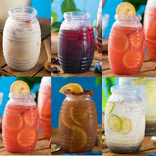

Tacos dorados: delgadas tortillas rellenas de carne de res y vegetales picados, que
se enrollan, se fríen y se sirven con ensaladas, salsas, quesos y todo tipo de aderezos
Sopa: Plato compuesto de un caldo y uno o más ingredientes sólidos cocidos en
él. Sopa de fideos, de verduras, de pescado. sopicaldo, caldo, consomé, puré, gazpacho.
Bebida: Agua Natural del sabor que sea: limón, Jamaica, Horchata, Tamarindo
PRECIO: $9Bod0